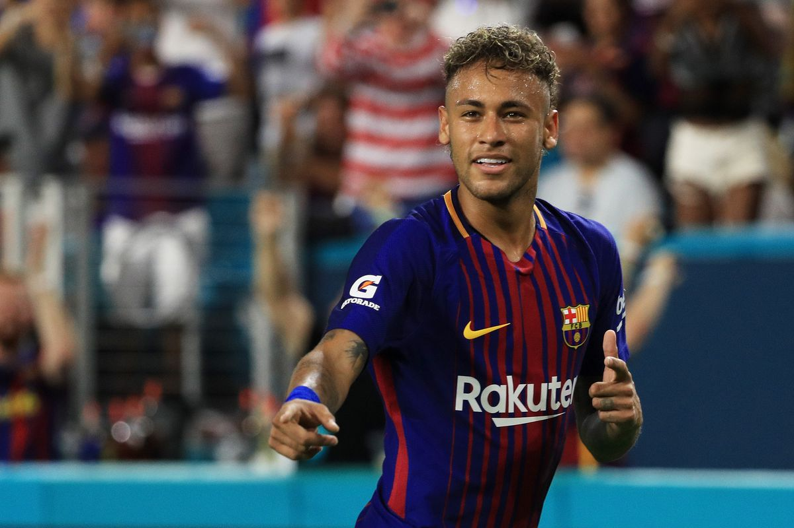
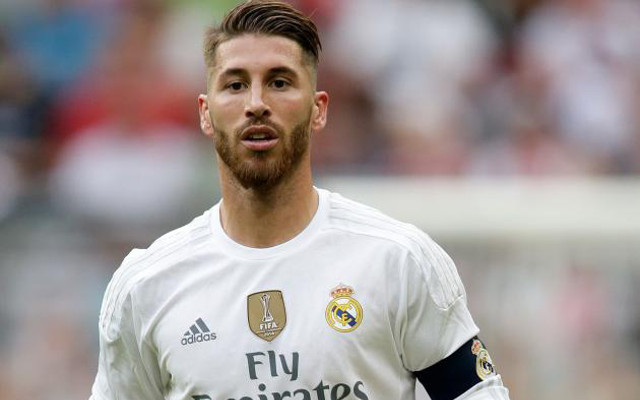
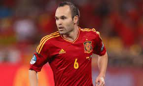

Active:
| Lionel Andrés Messi(Messi) | Neymar da Silva Santos Júnior(Neymar) | Cristiano Ronaldo dos Santos Aveiro(Cristiano Ronaldo) | Sergio Ramos García(Ramos) | Andrés Iniesta Luján(Iniesta) |
|---|---|---|---|---|

|
 |

|
 |  |
| 24 June 1987 (36) | 5 February 1992 (31) | 5 February 1985 ( 38) | 30 March 1986 ( 37) | 11 May 1984 ( 39) |
|
A prolific goalscorer and creative playmaker, Messi holds the records for most goals in La Liga (474), most hat-tricks in La Liga (36) and the UEFA Champions League (eight), and most assists in La Liga (192) and the Copa América (17). He also has the most international goals by a South American male (106). |
Neymar—a slender-framed 5-foot 9-inch (1.75-metre) forward—was supremely confident on the field, with excellent body control, quick reflexes, and explosive speed. He made his first team debut with Santos in 2009. |
A tall player at 6 feet 1 inch (1.85 metres), Ronaldo was a formidable athlete on the pitch. Originally a right-winger, he developed into a forward with a free-reined attacking style. He was able to mesmerize opponents with a sleight of foot that made sufficient space for openings in opposing defenses. |
Ramos currently holds the record as the most capped player in the history of the Spain national team and is his country's ninth-highest all-time goalscorer. He also holds the record of most international victories for Spain with 131 matches won. |
Andrés Iniesta (born 11 May 1984) is a Spanish football player. He plays for Barcelona and the Spanish national team. He is known for scoring the 2010 FIFA World Cup winning goal against the Netherlands in the 116th minute of extra time. He is regarded as one of the greatest midfielder of all time. |